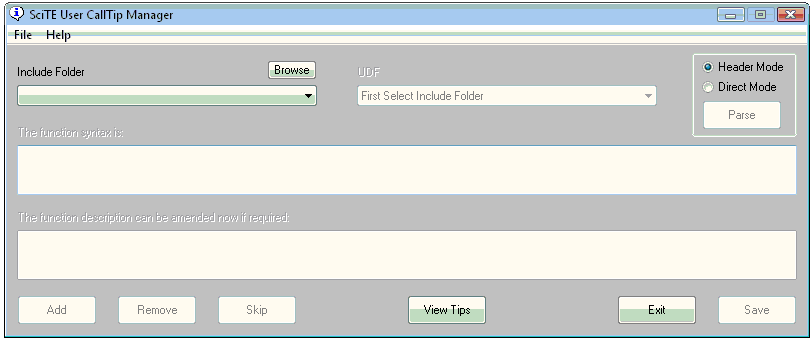

Overview
This utility offers an easy way to manage user-written and downloaded UDFs within SciTE, adding the functions within them to the AutoComplete combos and creating syntax CallTips when entering
parameters. You open the utility from the <Additional Tools> tab within SciTEConfig. It loads the current functions contained within the SciTE "au3.user.calltips.api" file into its internal listing.
Main Screen

First select the "Include Folder" that holds the new UDF file. If you have set a user include folder into the registry either manually or via SciTEConfig it will appear automatically - if not then you will need to use
the "Browse" button. Once a folder has been selected, the .au3 files within it are listed in the "UDF" combo - selecting a file opens it for parsing. The UDF can be parsed for functions in 2 ways:
Header Mode - This mode assumes that the UDF has standard function headers including "Syntax" and "Description" lines. These lines are automatically extracted as the functions are found
- the "Description" text can be modified if required.
Direct Mode - This mode looks for lines within the UDF beginning with "Func" and uses this definition line as the "Syntax" line for the function. The "Description" text must be added
by the user.
Once a function is detected, the user can add it to, or remove it form, the internal list, or simply skip to the next. A dialog announces that all functions within the UDF have been parsed - another UDF can now be
selected.
View Tips
Pressing the "View Tips" button lists all the UDFs currently within the internal list. Double-clicking a line displays the full CallTip for the function. Selecting a function and pressing the
"Delete" button will, after confirmation, delete the function from the list. The "Close" button returns to the main GUI.
Save and Exit
Pressing "Save" stores the current internal list of functions and CallTips to the SciTE CallTip and properties files. Pressing "Exit" abandons all changes.